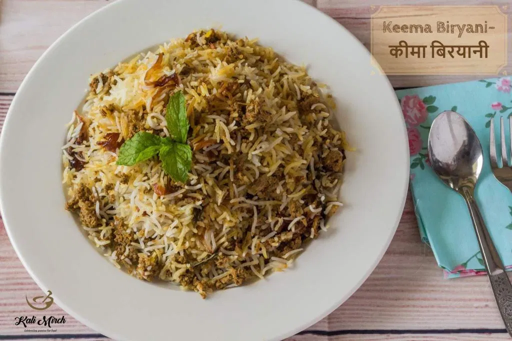

Keema Biryani

Description
Keema Biryani or Mutton Keema Biryani is a subtly spiced Biryani that combines perfectly cooked, flavorful minced meat with Indian spices and Long grain, aromatic Biryani rice. If you do not prefer bone on the meat, then this Biryani will definitely excite you.
Ingredients
- 500 gms Minced Mutton (Goat meat)
- 1 Large=100gms Onions-finely chopped
- ¾th Cup=150gms Curd
- 1 Cup brown Onions
- Cooking Oil
- Clarified Butter
- Green Masala paste: -
- ¼th Cup Fresh Coriander leaves
- ½ Cup fresh Mint leaves (1/4th Cup for Masala and other ¼th Cup in layering)
- 1½-inch Ginger root
- 8-10 Cloves of Garlic
- 1 tbsp Lime Juice
- 6 Green Chilies
- Rice: -
- 1½ Cup=300gms Long Grain Basmati Rice-washed, cleaned and soaked for 30 mins
- 2 Bay Leaf
- 1-inch Cinnamon Stick
- 1 tsp Black Cumin Seeds
- 4 Green Cardamom
- 4 Cloves
- Other Ingredients:-
- ¼th tsp Turmeric Powder
- 1½ tsp Red Chili Powder
- 1 tsp Garam Masala Powder
- 1 tbsp Rose water
- Few saffron strands-soaked in 1 tbsp warm milk
Steps
- We will grind a masala paste for Keema marination. In a grinder jar, put Green Chilies, Ginger and Garlic, Coriander leaves and ½ quantity Mint leaves. Add Lime juice and water. Grind into a fine paste. We have used 2-3 tbsp water for grinding this masala paste.
- Take a large bowl and put Keema in it. Add Curd, Red Chili Powder, Garam Masala Powder, Turmeric Powder, Green masala paste, salt and mix well. Keep the Keema covered. Let's cook rice now.
- Boil 6-7 Cups of water in a Pan. Allow water to get to boiling state. Add Bay leaf, Cinnamon stick, Cloves, Black Cumin Seeds, Green Cardamom,1 tsp Ghee and mix well. Now season the water with sufficient amount of Salt. Add Soaked Rice. Cook until rice is 90% done-(4-5 mins)
- We have cooked rice for about 5 mins and it's almost done. Remove from the Pan with a strainer and spread in a large plate. Allow the rice to cool down completely. When rice cools down, remove the whole spices from it.
- Now, we will cook Keema. In a Pan, heat 3 tbsp Cooking Oil. Add chopped Onions and cook until it becomes brown in color. Add some Salt for faster and even browning of Onions. Onions become brown in 5-6 mins. Now, add marinated Keema.
- We will not add any water while cooking Keema. Cover and cook on low heat. Let's uncover after 10 mins. Add Salt to taste and mix. Cover and cook on low heat.
- Uncover after total 15 mins of cooking time. Keema is well cooked now. Cook uncovered to remove excess moisture
- We have cooked Keema uncovered for 2 mins. We need some gravy in Keema to keep the Biryani moist. Remove from heat. We will now layer the Biryani..
- Take a thick-bottomed vessel (Biryani Handi). Grease the bottom and sides with Ghee. Put cooked Keema at the bottom of the pan (half quantity). Spread evenly.
- Put some brown Onions on top, half quantity cooked rice. Spread evenly without breaking the rice grain with a fork. Put some saffron milk. Add mint leaves and some more brown Onions. This completes first layer of Biryani.
- Repeat for second layer: Keema, brown Onions, Rice, saffron milk, mint leaves and brown onions
- Put rose water on the top layer and put some ghee. Seal Biryani Handi
- Apply dough on the lid. Seal the Biryani Pot with this lid.
- Place the Biryani Handi on high heat for 3 mins. Heat an iron griddle on another flame. After 3 mins, transfer Biryani Pot on this Iron griddle. Transfer Biryani Handi on Iron griddle and cook on low heat for 10 mins-Dum Method of Cooking.
- After 10 mins of slow cooking, we will now open the Handi.